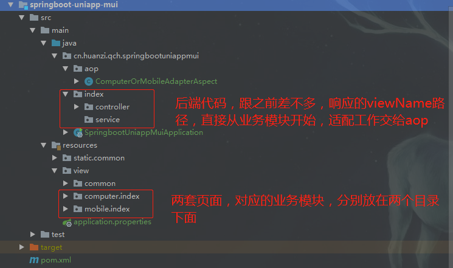
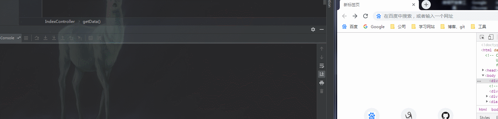

页面自适应PC端、移动端大体上可以分为两种：
1、在同一个页面进行自适应布局，通常使用CSS3 @media 媒体查询器实现
2、两套页面，在后端进行统一适配，根据不同的浏览器UA返回对应的页面
本文记录在java后端进行PC端、移动端页面适配的方案
想要实现后端统一适配，首先要规范好工程结构
后端代码，跟之前差不多，响应的viewName路径，直接从业务模块开始，适配工作交给aop；两套页面，对应的业务模块，分别放在两个目录下面

统一的适配工作交由aop环绕切面进行，思路如下：
1、首先切入点是所有模块的controller
2、if判断，方法返回值为ModelAndView才需要进行处理
3、获取浏览器UA进行判断，修改返回值ModeAndView的viewName
PC端ua：windows nt、macintosh
移动端ua：iphone、ipod、android
当然，现在的UA标识判断还过于简单，并没有完全覆盖市面上所有的PC端、移动端，这个需要自行补充
/**
* PC端、手机端页面适配器
*/
@Aspect
@Component
@Slf4j
public class ComputerOrMobileAdapterAspect {
/**
* Pointcut 切入点
* 匹配controller包下面的所有方法
*/
@Pointcut(value = "execution(public * cn.huanzi.qch.springbootuniappmui.*.controller.*.*(..))")
public void pointcut() {
}
/**
* 环绕通知
*/
@Around(value = "pointcut()")
public Object around(ProceedingJoinPoint pjp) {
//request对象
HttpServletRequest request = ((ServletRequestAttributes) RequestContextHolder.currentRequestAttributes()).getRequest();
try {
//获取返回值
Object o = pjp.proceed();
//拦截返回值为ModelAndView即可
if("org.springframework.web.servlet.ModelAndView".equals(o.getClass().getName())){
/*
PC端ua：windows nt、macintosh
移动端ua：iphone、ipod、android
*/
String adapter;
String ua = request.getHeader("user-agent").toLowerCase();
if (ua.contains("iphone") || ua.contains("ipod") || ua.contains("android")) {
adapter = "mobile";
} else {
adapter = "computer";
}
log.info("PC端、手机端页面适配器：" + adapter);
//强势修改
ModelAndView modelAndView = (ModelAndView) o;
String viewName = modelAndView.getViewName();
modelAndView.setViewName(adapter + "/" + viewName);
o = modelAndView;
}
return o;
} catch (Throwable throwable) {
//返回统一错误页面
log.error(throwable.getMessage());
return new ModelAndView("common/error/500");
}
}
}
由于我们已经规范了工程结构，HTML文件的存放路径是先分PC端、移动端两个大目录，每个大目录下面才是具体的业务模块目录，因此我们的controller中设置的viewName直接从业务模块目录开始就可以了，前面的两个大目录又aop去适配统一添加
@RestController
@RequestMapping("/index/")
public class IndexController {
@GetMapping("index")
public ModelAndView index(){
return new ModelAndView("index/index");
}
@GetMapping("getData")
public String getData(){
return "获取数据接口";
}
}
效果演示
可以看到，已经能根据不同的UA响应不同的HTML页面，同时，只有controller中，响应值为ModeAndView的aop适配器才会进行工作

在java后端进行PC端、移动端页面适配的方案就暂时记录到这，后续再进行补充
代码已经开源、托管到我的GitHub、码云：